论文阅读-0x06
论文的阅读笔记：
《 Zero-Reference Deep Curve Estimation for Low-Light Image Enhancement 》[code] , CVPR 2020
《 Learning to Restore Low-Light Images via Decomposition-and-Enhancement 》，CVPR 2020
Zero-Reference Deep Curve Estimation for Low-Light Image Enhancement
Abstract
- 本文提出了一个新颖的方法—— 零参考深度曲线估计 (Zero-Reference Deep Curve Estimation，Zero-DCE)，通过深层网络将光增强公式化为特定于图像的曲线估计任务（ 图像作为输入，曲线作为输出 ）
- 训练一个轻量级深度网络DCE-Net来估计像素和高阶曲线，以便对给定图像进行动态范围调整
- Zero-DCE的优点在于它对参考图像的宽松假设，即在训练过程中不需要任何配对或未配对的数据，而是通过一组精心制定的非参考损失函数来实现的，隐式地测量增强质量并驱动网络的学习
- 其方法是有效的，因为图像增强可以实现直观和简单的非线性曲线映射
- 该方法以一个弱光图像作为输入，生成高阶曲线作为输出。这些曲线然后用于对输入的动态范围进行像素调整，以获得增强的图像
- 同时作者发现该曲线是可微的，因此可以通过一个深度卷积神经网络来学习曲线的可调参数
- 并且该方法是零参考的，即在训练过程中不需要任何配对甚至是非配对的数据，仅使用CNN和GAN方法，以及一套特别设计的非参考损失函数
- 空间一致性损失、曝光控制损失、色彩稳定性损失和照明平滑损失，所有这些都考虑到光增强的多因素
- 主要贡献总结如下：
- 提出了第一种不依赖于配对和非配对训练数据的弱光增强网络，避免了过拟合的风险，可以很好地适用于各种照明条件
- 设计了一种特定于图像的曲线，它可以迭代地逼近像素和高阶曲线（ pixel-wise and higher-order ）。这种图像特异性曲线可以有效地在较宽的动态范围内进行映射
- 展示了在没有参考图像的情况下，通过任务特异性的非参考损失函数来间接评估增强质量，训练深度图像增强模型的潜力
相关工作
- 传统方法
- HE-based，基于图像直方图分布，在全局和局部对图像的直方图分布进行调整
- 基于Retinex 理论的方法 ，分解一个图像的反射率和光照。反射分量通常被假定在任何光照条件下是一致的
- 本文提出的Zero-DCE方法通过图像特定的曲线映射产生增强的结果
- Zero-DCE是一种纯数据驱动的方法，在设计非参考损耗函数时考虑了多个光增强因素，因此具有更好的鲁棒性，更宽的图像动态范围调整，更低的计算量
- 数据驱动方法
- 大多数基于cnn的解决方案依赖配对数据进行监督训练，因此它们是资源密集型的。通常情况下，配对的数据是通过自动光降解、在数据捕捉期间改变相机的设置、或通过图像润色合成数据来穷尽地收集的
- 因此这些基于以上这种配对数据的方法通常是high cost(数据收集)，并且数据集还存在一些虚假/不真实的图片(人工合成)，这样会影响到模型的泛化能力(当模型应用在真实世界的不同光照下，通常会出现色偏等现象)
- 基于GAN的无监督方法具有消除配对数据用于训练的优点，不过需要仔细选择未配对的训练数据
- 本文提出的Zero-DCE相比于上面的data-driven方法有三个优点
- 探索了一种全新的学习策略(zero reference)，消除了对成对和非成对数据的需求
- 设置非参考损失函数来对输出图像进行间接的评估
- 提出的方法是高效和经济的
Methodology——DCE-Net
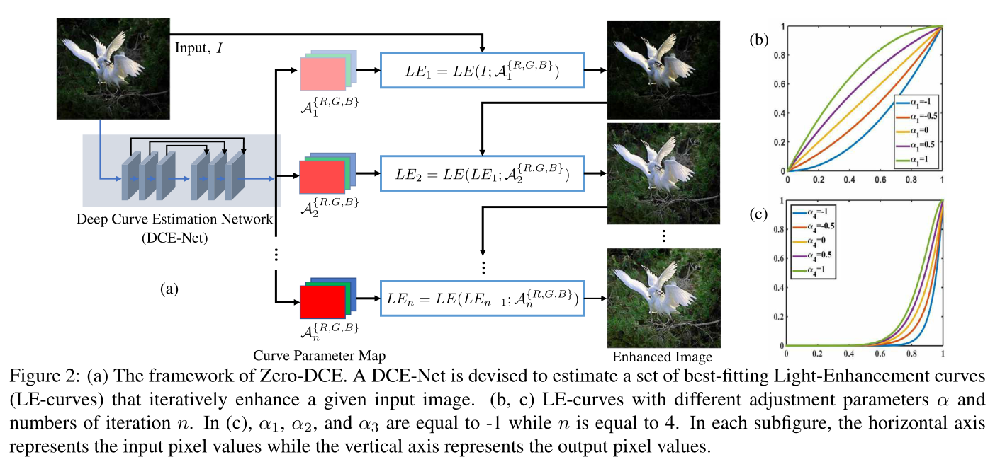
- DCE-Net：用于估计给定输入图像的一组最佳拟合光增强曲线(LE-curves)
- 然后框架迭代应用曲线， 对输入图像的RGB通道中所有像素进行映射，从而获得最后的增强图像
- 关键组件：LE-curve、DCE-Net和non-reference loss functions
Light-Enhancement Curve (LE-curve)
- 尝试设计一种曲线，可以自动将弱光图像映射到增强版本，其中自适应曲线参数完全依赖于输入图像
- 增强图像的每个像素值都应在归一化范围内[0,1]，避免溢出截断造成的信息损失
- 设计的曲线应该是单调的，从而保留相邻像素间的差异(对比度)
- 曲线应该尽可能地简单和可微，使得其在梯度反向传播过程中是可导的
- 为此设计了一个二次曲线
- x表示像素坐标， 是输入I(x)的增强结果
- α ∈ [−1,1] 是可训练曲线参数，调节LE-curve的大小，控制曝光水平
- 每个像素归一化到[0,1]，操作都是在像素上进行，将LE-curve应用到RGB三通道上，从而保留固有色彩，同时避免过拟合
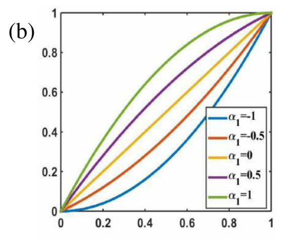
- 可以看出来LE-curve损失符合上述三个目标的。此外，LE-curve能够增大或减小输入图像的动态范围
- 不仅有助于增强弱光区域，也有助于消除过度曝光的伪影
- Higher-Order Curve
- 对LE-curve反复使用可以得到其高阶表示形式
-
- n为迭代次数，控制曲率（更大的调节能力，更大的曲率），作者将n的值设为8，可以满足大多数情况下的处理
- Pixel-Wise Curve
- 高阶曲线可以在比较宽的范围内进行图像调整，由于所有像素都使用了 α ，所以仍然相当于进行了全局操作，往往会对局部区域进行过强或过弱的增强
- 为此采用逐像素参数的方式来表示出图像的坐标，即给定输入图像的每一个像素都有一个对应的曲线，以最佳拟合的坐标进行动态范围的调整
-
- 其中A为与给定图像大小相同的参数图
- 假设一个局部区域的像素具有相同的强度(同样是相同的调整曲线)，这样在输出结果中相邻的像素仍然保持单调的关系
- 实验中作者这里使用的迭代次数为8，为了方便理解代码化简一下，大概形式为， 然后在这个基础上进行迭代
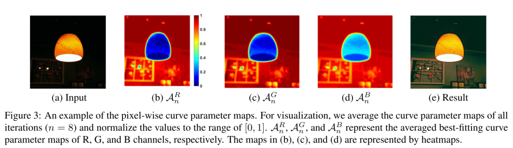
- 上图中给出了三个通道的估计曲线参数图的例子。从图中可以看出，不同通道的最佳拟合参数映射具有相似的调整趋势，但值不同，说明了低光图像的三个通道之间的相关性和差异性
DCE-Net
- 学习输入图像与其最佳拟合曲线参数图之间的映射
- 网络结构
- 具有对称连接的七个卷积层。每层由32个大小为3×3的卷积核和stride=1以及ReLU激活
- 抛弃了破坏相邻像素关系的下采样和批处理归一化层
- 在最后一个卷积层之后是Tanh激活函数，它为**8次迭代(n = 8)**生成24个参数图，其中每次迭代需要3个通道的曲线参数图
1 | # 代码实现比较简单 |
Non-Reference Loss Functions
- 为了在DCE-Net中实现零参考学习，提出了一组可区分的非参考损失，可以用来评估增强图像的质量
- Spatial Consistency Loss（空间一致性损失）
- 通过保持输入图像与增强图像相邻区域的差异（对比度）来促进增强图像的空间一致性
-
- K为局部区域的数量，Ω(i)是以i为中心的四个相邻区域（上下左右）， Y和I分别为增强图像和输入图像的局部区域平均强度值。这个局部区域的Size经验性地设置为4x4
- Exposure Control Loss（曝光控制损失）
- 为了抑制曝光不足/过度区域
- 衡量局部区域的平均强度值到良好曝光水平E之间的距离。遵循现有的做法，将E设为RGB颜色空间的灰度，在本文中作者将其设为0.6
-
- M为大小为16×16的不重叠局部区域的个数，Y为增强图像中某个局部区域的平均强度值
- Color Constancy Loss（色彩恒等损失）
- 根据灰度世界的颜色恒等假设
- 即每个传感器通道的颜色在整个图像上平均为灰度
- 用于校正增强图像中可能出现的颜色偏差，并建立了三个调整通道之间的关系
-
- 式中表示增强图像通道p的平均强度值，(p,q)表示一对通道
- 根据灰度世界的颜色恒等假设
- Illumination Smoothness Loss（光照平滑度损失）
- 为了保持相邻像素间的单调关系
-
- N为迭代次数，分别代表水平和垂直方向的梯度操作
- Total Loss
- 不过源码中曝光控制损失前面也是有个权重参数
- 代码实现有点多，不过基本都是上面这些公式的具体实现
Experiment
- batch size= 8，2080Ti，使用(0, 0.02)高斯函数初始化权重，bias初始为常量，使用ADAM优化器(lr=1e-4)， 为0.5， 为20，从而平衡loss间尺度差距
- 消融实验
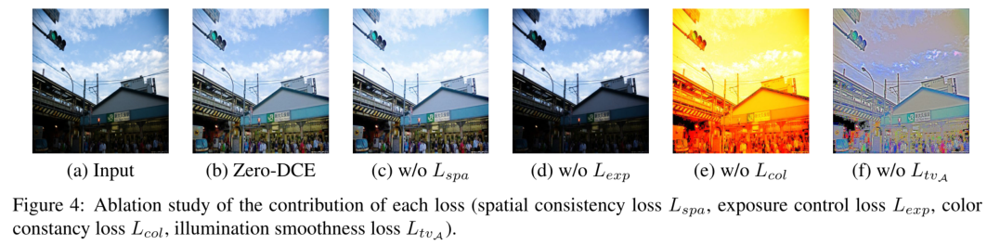
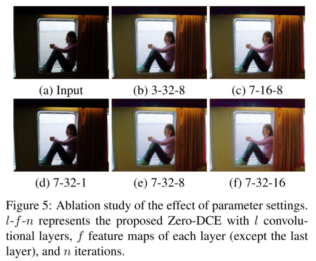
- L-F-N代表Zero-DCE有L层卷积，每层有F个feature map以及迭代次数为N
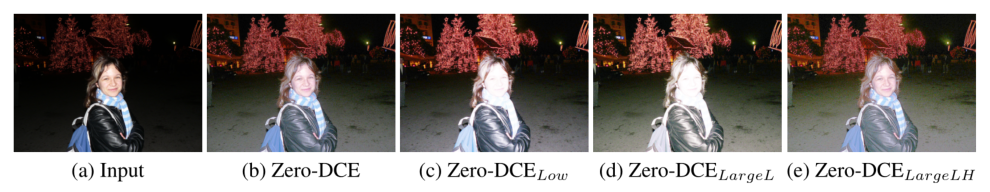
- 使用不同数据集对Zero-DCE进行训练
- 原训练集中(2422)的900张low-light图像Zero-DCELow
- DARK FACE中9000张未标注的low-light图像Zero-DCELargeL
- SICE数据集Part 1 and Part2组合的4800张多重曝光图像Zero-DCELargeLH
- 在去除过度曝光的训练数据后，使用更多的低光图像，Zero-DCE仍倾向于过度增强光照良好的区域(如人脸)。这些结果表明了在我们的网络训练过程中使用多暴露训练数据的合理性和必要性。此外，当使用更多的多曝光训练数据时，ZeroDCE可以更好地恢复暗区，如图6(e)所示
- Benchmark Evaluations（基准评价）
- 在多个数据集(NPE LIME MEF DICM VV以及SICE的Part2)上与目前SOAT的方法进行了对比
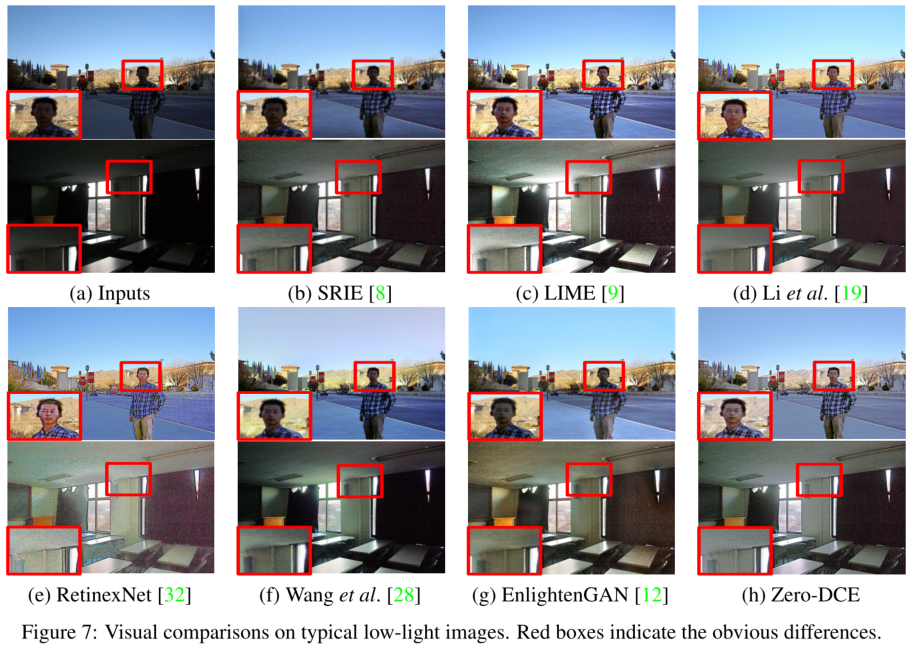
- 在实验数据上面，基本上就是又快又好
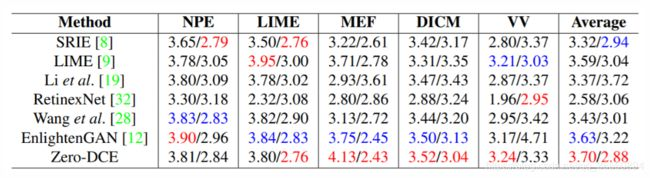
- 用户研究(US)↑/感知指数(PI)↓在图像集(NPE、LIME、MEF、DICM、VV)上得分，US得分越高，说明人主观视觉质量越好，PI值越低，说明感知质量越好。在每种情况下，最好的结果是红色的，而第二好的结果是蓝色的。
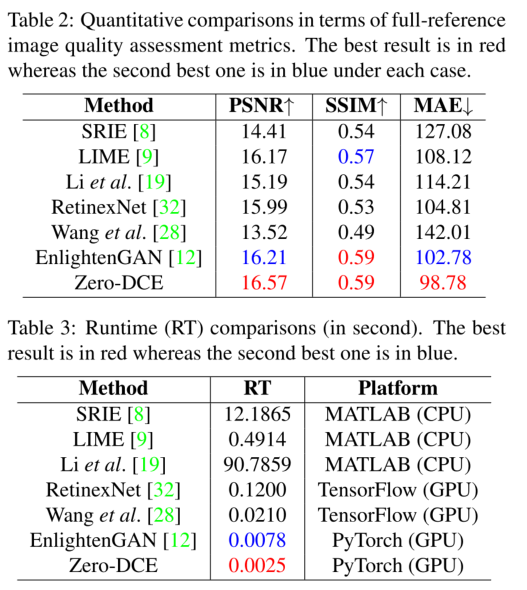
😝😜😋
以后想着看一篇论文多少都写一点自己的感受，不然感觉没啥吸收内容。
这篇论文感觉比较精彩的地方就是图像增强的实现方式以及那几个损失函数的组合使用，这样就能达到一种无参考的函数优化，感觉特别新颖，很有创新型。网络结构也不是特别复杂，但是能想到这种方式真的很强，好好记录一下，以后说不定会翻出来再看看。
Learning to Restore Low-Light Images via Decomposition-and-Enhancement
Abstract
- 弱光图像（Low-light images）存在两个问题
- 能见度低(即像素值小)
- 由于低信噪比，噪声十分明显，干扰了图像内容
- 不过大多数现有的低光图像增强方法都是从可忽略噪声的数据集学习的（像上面那篇）
- 这些方法在增强微光图像并去除其噪声是存在问题的，我们观察到噪声在不同的频率层表现出不同的对比度，并且在低频层比在高频层更容易检测到噪声
- 在此基础上提出了一种新的网络，该网络首先在低频层学习恢复目标图像，然后基于恢复的目标图像增加高频细节
- 作者还准备了一个新的具有真实噪声的弱光图像数据集
- 由于量化的原因，在标准RGB (sRGB, 24位/像素)空间中，弱光图像的可见度与人的感知不匹配
- 本文解决了弱光sRGB图像增强问题
- 涉及两个问题:图像增强和去噪
- 动机基于两个观察
- 图像低频层保存了更多的信息，如物体和颜色，与比图像高频层(图1(d))相比，受噪声的影响较小(图1©)，这说明对低频图像层进行增强要比直接对整个图像进行增强容易
- 图像基元的固有维数非常低，使得神经网络有可能学习图像基元的全部知识
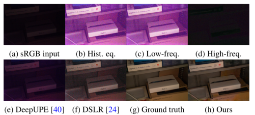
- 在给定24位色深（a）的低光照sRGB图像的情况下，典型的增强方法（这里使用的Hist就是直方图均化）无法产生令人愉悦的图像，并且细节得以恢复并且噪声得到抑制（b，e，f）。 为了说明我们的想法，我们应用高斯滤波器将（b）分解为低频层（c）和高频层（d），并观察到低频层保留了足够的信息以恢复对象和颜色，可以用于增强高频细节。 这激发我们学习弱光图像的分解和增强方法（h）
- 给定一个图像基元的低频信息，通过推测相应的高频信息，网络可以重构出整个基元。有了这样的先验，可以从恢复的低频层中学习增强高频细节
- 为此作者提出一种新的神经网络，利用 关注上下文编码(Attention to Context Encoding， ACE)模块
- 第一阶段自适应地选择低频信息用于恢复低频层和去除噪声
- 第二阶段自适应地选择高频信息用于细节增强
- 还提出了一个跨域变换(Cross Domain Transformation， CDT)模块，以利用多尺度基于频率的特征，在两个阶段进行噪声抑制和细节增强
- 作者归纳的三个贡献点
- 提出了一种新的基于频率的分解和增强模型来增强弱光图像
- 在抑制噪声的同时恢复低频层的图像内容，然后恢复高频图像细节
- 提出了一种网络，其中包含一个关注上下文编码(ACE)模块，用于分解输入图像以自适应增强高频/低频层，以及一个跨域转换(CDT)模块，用于噪声抑制和细节增强
- 准备了一个具有真实噪声的低光图像数据集和相应的ground truth图像，以方便学习过程
- 提出了一种新的基于频率的分解和增强模型来增强弱光图像
- 低光增强的传统方法
- 上面那篇论文介绍了一些，就稍微在记录一下
- 直方图均化、伽马校正
- 基于深度学习去学习一个映射函数；基于retinx的图像增强，将输入图像分解为光照和反射率，然后增强图像
- 不过作者认为这些方法都是针对低噪声的低光图像的，不能增强噪声低光图像
- 然而，简单地通过使用现有的去噪方法进行 前/后处理 来去除低光图像中的噪声是有一定复杂度的
- 低像素值使得难以在增强弱光图像之前提供用于检测/去除噪声的足够的上下文信息
- 在应用现有的增强方法之后，噪声会被不可预测地放大，从而产生仍然具有低SNR的图像，因此难以进一步去噪
- 为了解决这个限制，作者在本文中提出学习一种深度增强模型，以端到端的递归方式增强弱光图像同时去除噪声
Net Model
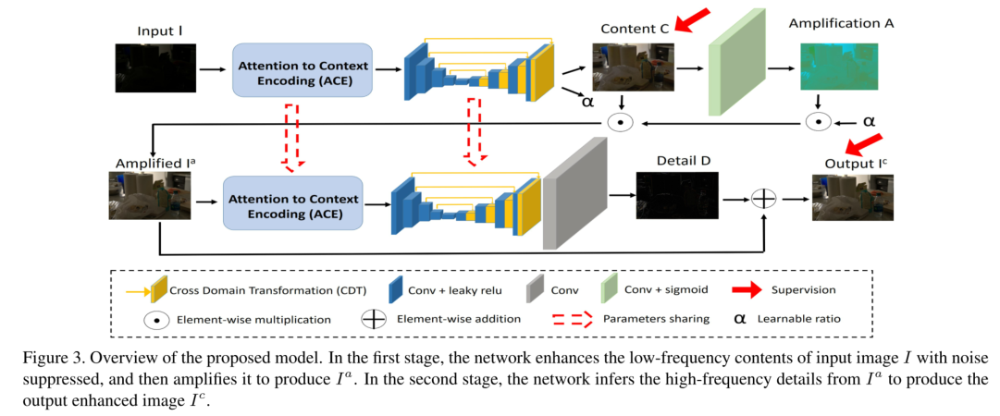
- 作者提出的方法受到两个观察结果的启发
- 与直接增强整个图像相比，增强噪声低光图像的低频层更容易
- 低频层的噪声更容易检测和抑制。通过分析图像低频层的全局属性，可以正确地估计图像的光照/颜色
- 自然图像中最原始的部分，例如边缘和角落，具有非常低的固有维数
- 如此低的维数意味着少量的图像示例就足以很好地表示图像原语。因此，给定基元的低频信息，可以推断出相应的高频信息
- 与直接增强整个图像相比，增强噪声低光图像的低频层更容易
- 作者提出的模型有两个主要阶段
- 低频图像的增强：提出学习低频图像增强函数C(·)，然后学习用于颜色恢复放大函数A(·)
- 通过联合建模从C(·)到A(·)的映射，网络不必同时学习全局信息(如光照)和局部信息(如颜色)，增强效果更好
- 给定一个弱光sRGB图像I，第一阶段的增强可以写成
-
- 其中 为放大的低频层
- 这里的A与基于retinex方法中的光照图（illumination map）不同， 其中α是一个全局增强系数，通过C获得的
- 即αA(·)可以被解释为自注意方式增强C的误差图
- 高频图像的增强：于 学习高频细节增强函数D(·)，而不是直接从有噪声的原始输入图像 I 恢复高频细节。然后对D(·)进行残差建模
- 各阶段的可视化图
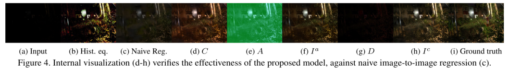
- 低频图像的增强：提出学习低频图像增强函数C(·)，然后学习用于颜色恢复放大函数A(·)
ACE Module
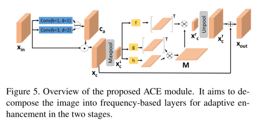
- Attention to Context Encoding注意上下文编码ACE
- 目标是学习用于图像分解的频率感知特征，为此作者扩展了最初用于编码长程关系的非局部运算（non-local）来选择频率自适应上下文信息
- 给定一个输入 ，首先使用两组扩张卷积（卷积核大小/扩张率为1/1和3/2），分别记为 和 ，用于提取不同接受域的特征，然后计算这两个特征之间的对比感知注意映射
- 表示像素级的相对对比度信息，其中高对比度的像素被认为属于高频层，取反的话就是得到低对比度部分，即低频信息
- 然后计算其逆映射 ，从中选择特征来表示低频内容
- 接着通过最大值池化来进一步缩小所选择的特征从而得到 ，从而减少计算量和分部局的像素依赖
- 对于给定 ，non-local上下文编码为
-
- 其中g，h，f为一组运算（卷积，重塑和矩阵转置）
- 首先计算像素之间的关系表 ，然后考虑每个像素与其他所有像素的关系，计算非局部增强特征
-
- 最后我们便得到了频率感知的非局部增强特征
-
- 使用残差结构
-
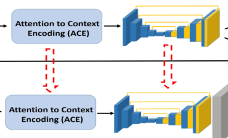
- 在整体网络框架中的两个ACE共享权重，不过第二个ACE模块中使用对比度感知映射算法（不是反向感知注意映射算法，即使用高频信息）从代表高频层的特征中学习图像细节
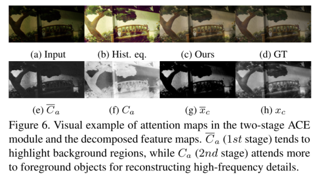
CDT module
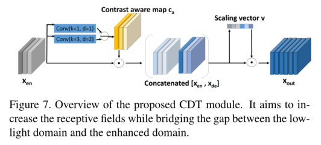
- 了解低光图像的全局属性有助于恢复光照和图像内容，为此设计了CDT模块，在缩小弱光域和增强域中的特征之间的差距的同时，增加感受野
- 在噪声弱光域提取的频率感知特征与在增强域提取的频率感知特征之间的差异
- 在第一阶段，首先通过自推导的反对比度感知映射 对编码器 的噪声特征进行空间重加权，以滤除高对比度信息，然后 与相应解码器的特征 进行拼接
- 然后从拼接后的 中计算全局缩放向量 v ，以通道方式自适应地缩放来自不同域的特征
- 使用v与拼接后的结果进行相乘得到最后的
- 在第二阶段，使用对比度感知的注意映射算法（高频）来学习图像细节，而不是使用反映射算法（低频），类似于ACE模块
Proposed Dataset
- 为了便于学习所提出的模型，作者准备了一个新的包含噪声信息的低光数据集：低光图像和对应的ground truth sRGB图像对
- 基于SID数据集准备训练数据，该数据集由原始数据和ground truth图像对组成，其中ground truth的拍摄时间较长，所以噪声可忽略不计
- 不过线性相机原始数据与非线性sRGB数据有显著的不同，特别是在噪声和图像强度方面
- 为此作者考虑了图像生成管道中的几个关键步骤(即曝光补偿Exposure compensation、白平衡White balance和去线性化De-linearization)，并对它们的操作进行了操作，以模拟来自不同相机的真实噪声低光sRGB图像
Training
- 在两阶段的训练过程中，使用L2损失来测量重建的准确性
- 在第一阶段,鼓励网络关注预测输入图像的低频分量，准备相应的ground truth，用 表示，通过使用引导滤波器过滤高频细节,保持ground truth图像的主要结构和内容
-
- 分别为重构图像内容、恢复后的图像、低频层的ground truth、恢复图像的ground truth
- λ1和λ2是平衡参数
- 网络结构图中的两个红色箭头（supervision，监督）
- 让低频图像和恢复图都接近ground truth
- 通过使用L1损失比较的VGG特征距离来合并感知损失
-
- 为vgg网络
-
😝😜😋
emm没啥写的，不写了
- 作者观察到，在不同的频率层中，噪声对图像的影响是不同的。基于此提出了一种新的基于频率的图像分解增强模型，在抑制噪声的同时，自适应增强不同频率层的图像内容和细节
- 提出了一个网络，该网络包含了关注上下文编码(ACE)模块，用于自适应增强高频和低频层，以及跨域转换(CDT)模块，用于噪声抑制和细节增强
- 准备了一个新的弱光图像数据集